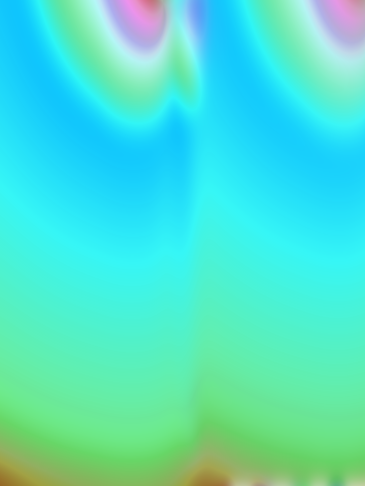

Paola Silva Lizarraga has made work for Wainstop Enterprises, has received microgrants from YoungArts Foundation, and Rhizome, is a Tufts Summer Scholar, and is pursuing a BFA in Studio Art at the School of the Museum of Fine Arts.
For most of my life, I lived in Tijuana, Mexico, at the border with the United States. There was the possibility we would move to America, and it seemed to get closer every year. Crossing the border to San Diego every weekend, the United States became synonymous with toy aisles, DVD bins, and Payless shoes: to go to America was to go to the mall.To shop like an American was important to me. I wanted to be American so bad. As much as the shopping mall was its own world, the world wide web was another, and through them my hope was to de-Mexicanize.
You must understand that the internet felt like a real place. Because it was: it was my tool for globalization.The internet was a promise: that we could become American, that we could be full resolution. When my family finally moved to Santa Ana, California, my dream revealed to be phony. Not only was I not American, I never would be. My wish is to let you into the world of two Paos, cross-eyed: the past Pao venerating plastic, and cuteness, the cynical Pao whispering that it's all hideous. Somewhere in between there is a truth I still can't write down. And it's all a little pixelated.
